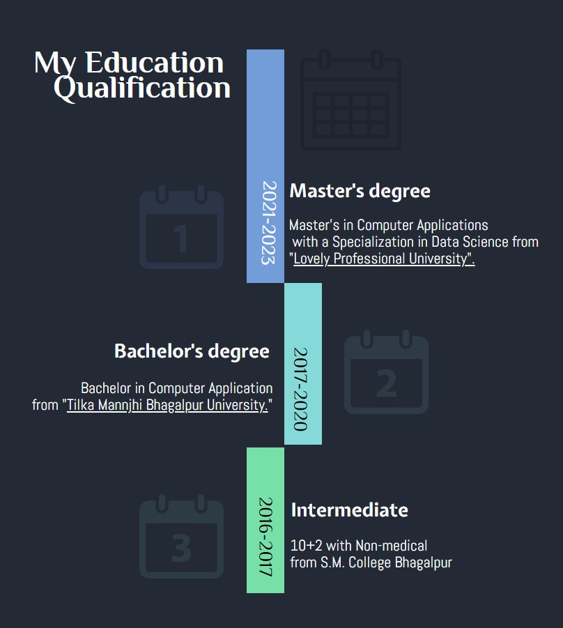

Hi, I'm Komal Singh

MCA @ Lovely Professional University
Machine Learning specialization
I've done number of certification in Data Science and Machine Learning where I learn building effective Machine Learning model, Running data pipeline, and Deployment solutions to the cloud. Looking forward to pursue my career in Data Science.
- Birthday: 5 May 1999
- City: Jalandhar, Punjab
- Freelance: Available
- Github: github.com/komalsingh1606
- Degree: Master
- Mail: komalsingh161297@gmail.com
I am a Data Science practitioner who loves to uncover hidden, facts and meaningful insights from messy Data having less than a year of total experience in the field of Data Analytics and Data Visualization I learn to build effective machine learning models, run data pipelines, and Deploying solutions to the cloud.
I'be done Number of certification course or Intership In the field of Data science. I create ML Data model using Linear regression. Logistic regression. Decision tree. Naive Bayes algorithm. KNN algorithm. K-means. Random forest algorithm.
